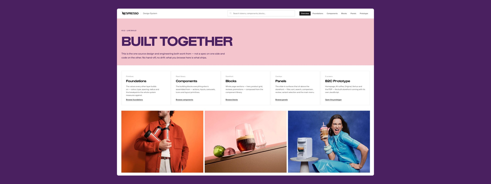

Case study · Nespresso
Rebuilding a premium shopping experience for 40+ markets
I led the team redesigning Nespresso's global web experience, from the first customer journey to a worldwide rollout.
In 2024, Nespresso set out to redesign its digital experience across 40+ markets, aligned to a new brand direction and built for a new CMS. Markets were fragmented, journeys were inconsistent and teams were duplicating effort. I'd joined Nespresso earlier that year as Product Owner for the Design System, and when the Digital Experience Revamp team was set up to fix this, I became one of its founding members.
My role
- Managed the cross-functional B2C team day to day
- Held the quality bar: every design had to scale across markets and meet product requirements before it shipped
- Made sure the Design System team stayed aligned with what the Revamp needed and defined
- Set up the brand-to-frontend pipeline that carries design decisions into code
- Kept the parallel B2B stream on the same Design System
- Supporting the B2C rollout to 100% of markets by mid-2027
The new site is being rolled out globally, so visuals are limited until launch.

Connecting brand to frontend
With a new brand and a new CMS arriving at the same time, the opportunity was bigger than any single workstream: connecting brand, CMS, Design System, customer journeys and frontend into one connected flow, with a brand-to-frontend pipeline that carries design decisions into code.
- BrandNew brand direction
- CMSNew content platform
- Design SystemFoundations, components, blocks
- Customer journeysHome to basket
- FrontendBuilt from the same parts
From one journey to the whole of B2C
Rather than optimising isolated screens, we started with a deliberately narrow slice of the customer journey, chosen because it touched every dependency we needed to test. Design, Product and Engineering could see the relationships across the whole experience, not just individual pages, and we could test the new experience model against real customer needs. From there we redesigned the whole B2C site: home, navigation, product listing and detail, basket, checkout and account.
- HomeCampaigns, news and offers
- Product listingFind and compare
- Product detailDecide with confidence
- Add to cartBasket and cross-sell
Looking at the whole journey changed what we fixed. Compatibility, which capsules work with which machine, was being treated as a content problem: clearer labels, better copy. But four separate data sources pointed elsewhere, and each had been looked at on its own. Together they described the same problem, and nobody had connected them.
What the data was saying
- Contact centre enquiries
- Returns on first coffee orders
- Drop-off on product pages
- New machine owners ordering for another system
Where we designed for it
- Navigation
- A new page ahead of the products
- Product listing
- Product detail
- Basket
So we introduced compatibility at every point a customer is choosing, from navigation to the basket. As we worked through the journeys, reusable patterns like this one fed back into the Design System, so the relationship ran both ways: the product experience improved the Design System, and the Design System accelerated the product experience.
Designing with markets, not for them
Across 40+ markets, a global experience can't be designed centrally and handed over. Before designing anything, we spent the end of 2024 understanding the problem, the markets and the people using the site.
- 40UX research studies
- 450+Customers and prospects taking part
- 12Stakeholder interviews
- 35+Reports reviewed
- 16Design critiques with markets
- 10+Markets invited to critiques
In early 2025, two week-long design sprints in Barcelona brought stakeholders from 10 markets together to build and test a realistic prototype, and a workshop in Paris aligned HQ and key markets on priorities for the next phase. I took part in cross-functional workshops with Design, Product, Brand, Engineering and market representatives: alignment sessions to agree the future experience early, rather than traditional design reviews. Every significant update then went to a design critique with markets, alongside weekly alignment sessions.
As the programme matured, these sessions became smaller and faster without losing market input. The operating model was simple: global direction, market input and shared foundations.
- DiscoveringResearch, audits and interviews
- AligningDesign sprints in Barcelona
- AligningWorkshop with markets in Paris
- First stepsWireframes tested with users
- Finding our identityArt and UI direction
- DeliveryFirst design package
- DeliveryPackages two to four
- RolloutPhased across 40+ markets
One team, one system
I led and managed the cross-functional B2C team day to day, Design, Frontend Engineering, Accessibility, Content and User Testing, organised around complete customer experiences rather than isolated deliverables. I worked closely with the frontend teams to translate the experience and Design System into real implementation, while accessibility and content were built in from the start rather than layered on afterwards. My role wasn't to own what was designed. It was to connect these disciplines, keep the team aligned and make sure the work was scalable, met product requirements and got delivered at global scale.
I made sure the Design System team aligned the system with what the Revamp and the new brand were defining, so the visual language became scalable patterns, components and frontend implementation, with clear rules on where markets could adapt. We moved beyond individual components to reusable content blocks, each documented with behaviour, responsive rules and usage principles, so teams reused whole patterns, not just UI. The goal wasn't uniformity across markets, but enough shared structure that teams stopped solving the same problems twice.
- A personalised experienceGuiding a first machine purchase for new customers, with shortcuts to favourite coffees for returning ones.
- Connected journeysOne core team across the whole experience, so every step flows into the next.
- Immersive imageryNespresso's newest content used to the full, often edge to edge.
- Clear and accessibleAs little friction as possible, built with the accessibility team from the start.
I also aligned a parallel B2B stream with the same Design System and standards. Not to force B2C and B2B into identical experiences, but to find where shared patterns could create reuse across both. The blocks and pages were designed to be reused on the B2B site, moving Nespresso toward a more unified digital ecosystem.
Where it's heading
The visual design matters, but what I'm most proud of is the platform behind it: Design System, reusable patterns, content and frontend implementation working as one. Future improvements can be evolution rather than redesign, and markets can focus on customer problems because the foundations already exist. The new B2C site is now in a phased global rollout, targeting 100% market adoption by mid-2027, and I'm supporting markets through it.
What Nespresso has taught me
The Design System is no longer the destination. It's infrastructure, connecting brand, experience, content, technology and delivery. The harder, more interesting challenge isn't building a better website. It's building a system that lets better digital experiences keep evolving after you've moved on.